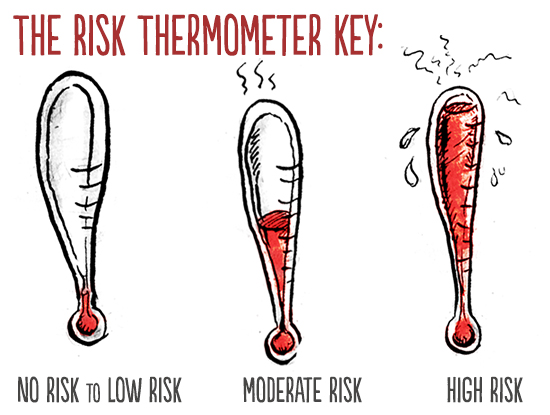
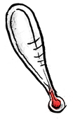
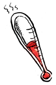
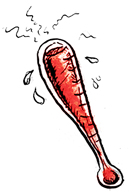

Can I Get Pregnant, or Get or Pass On an STI From That?
by

Want a quick way to sort out what poses what kinds of risks of pregnancy or sexually transmitted infections and what does not? Based on what we know from current, scientifically sound study, and in alignment with what credible, dependable health organizations report, the list and graphics below provide you that information.
You can use this as a tool to help figure out what activities you do or don't feel ready for, are or are not comfortable with, and what contraception, safer sex practices, or both you'll want or need to use when to reduce your risks of pregnancy, STIs or both. You can use it if you already engaged in a given activity, but aren't sure what levels of risk it posed to know if you should consider emergency contraception, and when you might need STI testing.
In case it's not obvious, what we using to show you the levels of combined risk are thermometers (when very small, the last of them looks like a very stressed-out carrot, but maybe that's just me).
The caveats: The levels of risk listed with each activity are for when safer sex barriers -- like condoms, dams or gloves -- or reliable birth control methods are NOT used. Not for when they are. The risks listed for the activities below also account for any body fluids present if and when there are fluids present or there may be. In other words, if you are asking or thinking, "But what about if there is pre-ejaculate?" with a given activity, know that if that can happen with that activity, it has already been taken into account.
To be clear as crystal: these specific risk levels are about these activities WITHOUT birth control and/or safer sex, NOT with them. Reliable methods of contraception used consistently and correctly greatly reduce the risk of pregnancy, and safer sex practices, particularly latex barriers (or barriers made of other materials, for those who cannot use latex), used consistently and correctly reduce the risks of all STIs.
If you were or are using one or more methods of contraception properly, you can find out how much they protect you from pregnancy by clicking here, then looking at the page for what method or methods you used. Pregnancy risks for any activities also will only be present when the people involved in a given activity have different genitals. In other words, if two people are engaging in intercourse and one has a penis and the other a vagina, there will be pregnancy risks. If both people involved have a vagina, or both a penis, there are no pregnancy risks.
In terms of STI risks, how much protection condoms and other barriers provide depends on both the specific infection and if they are or aren't being used properly and used every time, for all of sex, not just some. While studies on this vary a good deal, we know that safer sex barriers can greatly reduce the risks of all sexually transmitted infections. They do a better job at that with fluid-borne infections, like Chlamydia or HIV, than with infections like HPV or Herpes, which are primarily or often skin-to-skin transmitted, but you can figure that whatever STI risk level a given activity has, if you've used or are using barriers correctly and consistently, you've knocked your risk level at least down one level -- like from high to moderate -- if not more.
This chart only addresses risks of STIs and pregnancy: the kind of risk we can accurately determine and quantify broadly. It doesn't address or describe any of the emotional risks we and others may or do take with any kind of sexual activity, which we can't really measure like this. Those kinds of risks are much, much more individual and situational than health or physical risks, so we just can't generalize about them in the same way. For information about emotional safety, this is a good place to start.
No risk to low risk sexual activities:
 TALKING Talking about sex, including cybersex, phone sex, or sexy texting; "talking dirty"
Level of STI risk: No risk
Infections at possible risk of: No risk (except maybe zits from pressing a phone to your face)
Level of pregnancy risk: No risk
KISSING Putting lips together all smoochy-smoochy-like
Level of STI risk: No risk to low risk
Infections at possible risk of: Oral herpes (HSV-1), and common illnesses like colds, flu, or mononucleosis
Level of pregnancy risk: No risk
PETTING OR MASSAGE Stroking bodies or body parts without any naked genital contact, direct genital touching or fluid sharing; can include touching someone's genitals over their clothes; "feeling up"
Level of STI risk: No risk to low risk (Low risk for broken or abraded skin)
Infections at possible risk of: Bacterial infections for any broken skin
Level of pregnancy risk: No risk
;
SENSATION PLAY Exploring different sensations of the body, like with hot or cold items, objects like feathers or fabric, or using things like clamps, hands or other items for activities like spanking or suction; does not account for any direct genital contact or fluid sharing
Level of STI risk: No risk to low risk (Low risk for broken or abraded skin)
Infections at possible risk of: Bacterial infections for any broken skin
Level of pregnancy risk: No risk
MUTUAL MASTURBATION Masturbating together, but only touching one's own genitals, not a partner's genitals
Level of STI risk: No risk
Infections at possible risk of: Low risk of bacterial vaginosis (BV) and urinary tract infections (UTI) if hands or toys are not clean or covered
Level of pregnancy risk: No risk
USING SEX TOYS Use of something like a vibrator, dildo, butt plug, masturbation sleeve or other toy
Level of STI risk: No risk to low risk (Low risk for dirty and/or shared toys without barriers, like condoms or finger cots)
Infections at possible risk of: No risk
Level of pregnancy risk: No risk
An important note: If toys are shared, but not covered with shared use or sanitized in between, or you don't clean toys every time before and after use, there are possible risks of BV, UTIs and chlamydia. If toys are used for activities where there is some genital contact, like a strap-on used for intercourse, some STI risks, namely HPV or Herpes, can exist due to there still being direct genital contact.
MANUAL SEX Engaging a partner's genitals with the hands or fingers; "fingering," or "handjobs".
Level of STI risk: Low risk
Infections at possible risk of: HPV, genital warts, chlamydia, herpes simplex virus (HSV) 1 and/or 2, syphilis
Level of pregnancy risk: No risk
Note: If engaging in deeper manual sex, where more fingers or a whole hand are inside the vagina or anus -- some people call this fisting -- infection risks increase. Too, if after or during unprotected manual sex someone puts their fingers in their mouths or a partner's mouth, infection risks also are increased, especially if manual sex involves the anus.
DRY FROTTAGE OR DRY SEX Rubbing your genitals together while clothed, in this case, without direct genital-to-genital intercourse or any possible fluid sharing because of clothing
Level of STI risk: Low risk
Infections at possible risk of: Pubic lice, trichomoniasis
Level of pregnancy risk: No risk, so long as at least one partner is wearing clothing that covers their genitals. If genitals are not completely covered - for example, only one partner is wearing a narrow thong - that may allow fluid sharing, and there may be low risk.
Note: Most of the activities above are what people usually mean when they say outercourse. None of the activities which follow below are things we would call outercourse.
Moderate risk sexual activities:
 ORAL SEX - CUNNILINGUS Stimulating someone's vulva externally (the mons, outer or inner labia, clitoris, vaginal opening or perineum) and/or internally (the vagina) with the mouth, tongue or lips.
Level of STI risk: Moderate risk
Infections at possible risk of: chancroid, chlamydia, cytomegalovirus (CMV), gonorrhea, hepatitis B virus (HBV), hepatitis A virus (HAV), HSV type 1 and/or type 2, HIV (rare), HPV, nongonococcal urethritis (NGU), syphilis
Level of pregnancy risk: No risk
ORAL SEX - FELLATIO Stimulating someone's penis or testes with the mouth, tongue or lips.
Level of STI risk: High risk
Infections at possible risk of: chancroid, chlamydia, cytomegalovirus (CMV), gonorrhea, hepatitis B virus (HBV), hepatitis A virus (HAV), HSV type 1 and/or type 2, HIV (rare), HPV, nongonococcal urethritis (NGU), syphilis
Level of pregnancy risk: No risk
FROTTAGE OR TRIBBING (when people are NOT wearing any clothing)
Rubbing genitals directly together
Level of STI risk: Moderate to high risk (risks are much higher with the presence of body fluids, like ejaculate)
Infections at possible risk of: chancroid, chlamydia, cytomegalovirus, gonorrhea, HBV, HCV, HSV-2, HIV, HPV, NGU, pelvic inflammatory disease (PID), pubic lice, syphilis, trichomoniasis
Level of pregnancy risk: Moderate risk (higher if one partner ejaculates unto the other's genitals)
Note: Naked rubbing like this can be something people turn into intercourse, or something people consider they're doing instead of intercourse with ideas like "just the tip," or "just for a few seconds." If any vaginal entry at all is involved, that is vaginal intercourse, not this activity. If any genital entry into the anus is involved, that is anal intercourse, not this activity.
High risk sexual activities:
 SEMEN OR VAGINAL FLUID SHARING Tasting or ingesting pre-ejaculate, semen and/or vaginal fluids; direct genital or oral contact with fluids
Level of STI risk: High risk
Infections at possible risk of: chancroid, chlamydia, cytomegalovirus (CMV), gonorrhea, HSV type 1 and/or type 2, HIV, HPV, nongonococcal urethritis (NGU), hepatitis B virus (HBV), hepatitis A virus (HAV), hepatitis C virus (HCV)
Level of pregnancy risk: No risk if sharing is only oral, high risk if sharing is genital and involves contact between semen and the vulva
ORAL SEX - ANALINGUS Stimulating the anus or rectum with the lips and/or tongue.
Level of STI risk: High risk
Infections at possible risk of: Yeast/thrush (from trace fecal bacteria in mouth), chancroid, chlamydia, cytomegalovirus (CMV), gonorrhea, hepatitis B virus (HBV), hepatitis A virus (HAV), HIV (rare), HSV type 1 and/or type 2, HPV, genital warts, nongonococcal urethritis (NGU), syphilis, HAV, HCV Level of pregnancy risk: No risk
ANAL INTERCOURSE Entering the anus or rectum with a penis or sex toy
Level of STI risk: High risk
Infections at possible risk of: chancroid, chlamydia, CMV, gonorrhea, hepatitis B virus (HBV), hepatitis A virus (HAV), hepatitis C (HCV), HSV-2, HIV, HPV, NGU, pubic lice, syphilis
Level of pregnancy risk: Low risk
VAGINAL INTERCOURSE Interlocking the penis with the vagina or vaginal intercourse using dildos with harnesses (AKA, strap-on sex).
Level of STI risk: High risk (only when penis-in-vagina, not for strap-on intercourse)
Infections at possible risk of: chancroid, chlamydia, CMV, gonorrhea, hepatitis B virus (HBV), hepatitis C (HCV), HSV-2, HIV, HPV, NGU, pelvic inflammatory disease (PID), pubic lice, syphilis, trichomoniasis Level of pregnancy risk: High risk
EXTRA: HIGHER STI RISKS What things can increase STI risks when part of these activities?
Exposure to blood or menses
Having yourself or direct exposure to someone else's open wounds, genital sores of any kind or abraded, or "raw" genitals (like when enough lubricant isn't used, genitals are raw from long sexual activity or there has been very recent genital shaving)
Having any kind of illness: when your immune system is already working overtime, you're more susceptible to infections
Want to reduce the risk of pregnancy for any of the activities here which pose those risks? Then you'll need to be using at least one, and ideally two, method(s) of effective contraception consistently and correctly (as in, properly, and every time). At Birth Control Bingo you can find a method or methods of reliable contraception to do that effectively, as well as instructions on how to use those methods correctly and consistently.
Want to reduce the risk of sexually transmitted infections for any of the activities here which pose those risks? Check out Safe, Sound and Sexy for instructions on how to practice safer sex to reduce your risks. You can also check this out to find out what does not make sex safer. For more information on any of the specific STIs listed on this page, or more general information about STIs, you can take a look at the following resources:
- Our Infection Section
- The Centers for Disease Control
- The American Sexual Health Association
- The World Health Organiztion
To learn more or get extra help with contraception (birth control), sexually transmitted infections and diseases or safer sex, you also can always consult a sexual healthcare provider: they're someone ideal to talk to in-person and get one-on-one help from when it comes to figuring out what you, uniquely, need and can use to manage and reduce these risks if you want to engage in any kind of sex.
Been There, Done That and....Uh Oh?
If you've already engaged in any of these activities and are concerned about possible STI risks, pregnancy risks or both, and looking at this chart, it's clear there may have been, then your next steps are as follows:
• For pregnancy risks: If it's been less than 120 hours since your risk, emergency contraception can reduce your risks of pregnancy substantially, especially when used within 24 hours. You can get information on EC on our site here, or can use the Princeton Emergency Contraception site -- which includes where to get it worldwide, as well as what brands of birth control pills can be used as EC, and how to use them.
Either after using EC/Plan B, or if you can't or don't, you'll need to wait things out until you (or your partner) either get a menstrual period or, if a period is late or missed, a pregnancy test can be taken. Pregnancy tests, be they home tests or clinical tests, generally will only be accurate after a period is late (and "late," typically means a period that still hasn't come when it's been around or over five days after the last day it was expected on) or missed OR when it's been around 2-3 weeks after a risk.
• For STI risks: With the exception of post-exposure prohylaxis (PEP) for known or possible HIV exposure, there is no equivalent of emergency contraception for STIs.
So, your next steps will be getting tests for STIs, if you don't get them regularly already. There's no point in rushing out to get those tests, because STIs have an incubation period, where even if you're getting one, it's not going to show up for a little while. For some infections, that incubation period can be years, but you don't have to wait that long. You can get tested for the most common infections within 2 - 3 weeks of possible exposure, but may just need to be retested, or more fully tested, around 3-6 months later as a follow-up. Your healthcare provider will follow up with you after tests, including providing any treatment if you need it, as well as recommending when you get tested next, and what to do in terms of your health and sexual life if you have contracted an STI. We always advise that you try to choose sexual partners who get regularly tested themselves, but in the event an STI is in the mix, it's vital anyone you're with gets their own tests and treatment, as needed.
We know both of these things often involve waiting things out when you're scared or feel uncomfortable, and we know that that can really stink. But unfortunately, there's just no getting around that save going back in time, which anyone who isn't Dr. Who lacks the ability to do. It's understandable when we want to get out of feeling discomfort as
fast as possible, but sometimes that's just not possible. On top of that, sometimes sitting in our discomfort, instead of trying to ignore it or push it away, can offer us important cues about our choices: if we do or don't feel okay about making the same choices, or making them in the same way, the next time.
During that time, just up your self-care, turn to a partner, friends or family for any emotional support you need, and do your best to relax as much as you can. You can also use that time to better figure out if you are or aren't comfortable making the same choices moving forward. If you do want to make changes, you can have talks with partners during this time about the changes you want to make, like taking some or all kinds of sex off the table, or being safer about it, and set yourself up to be better prepared next time around.
(The thermometer illustrations by Molly Crabapple and some of the content of this page have been excerpted and adapted from S.E.X.: the All-You-Need-to-Know Progressive Sexuality Guide to Get You Through High School and College, available at many bookstores and libraries.)